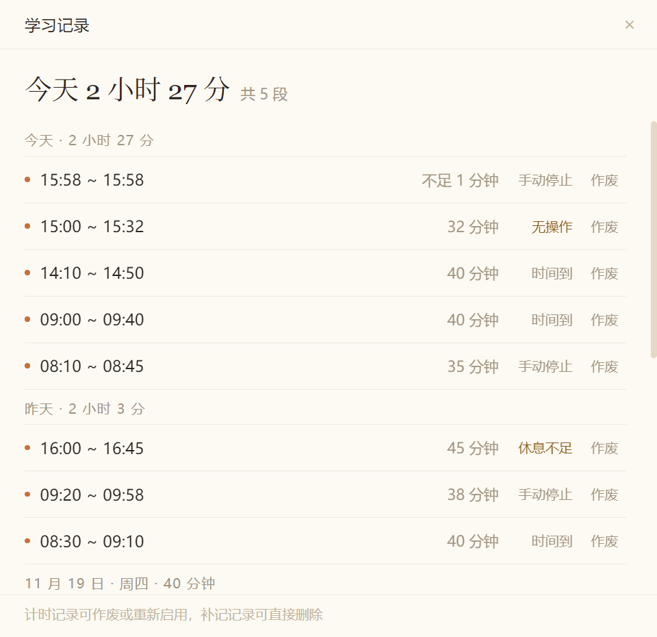
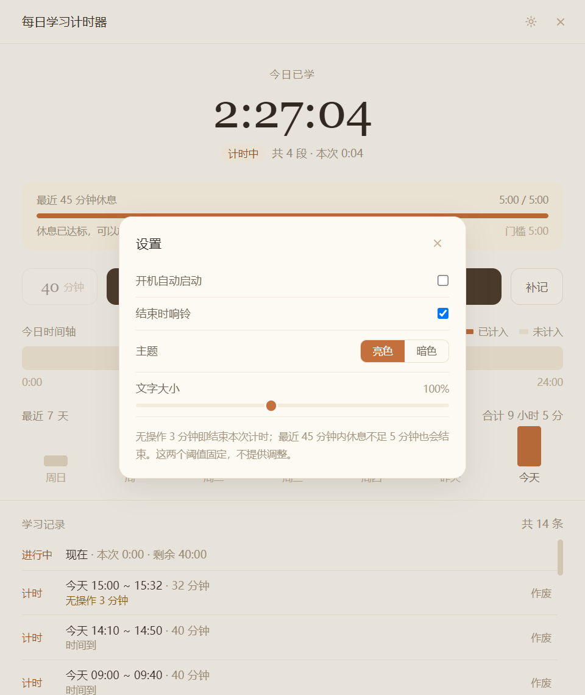
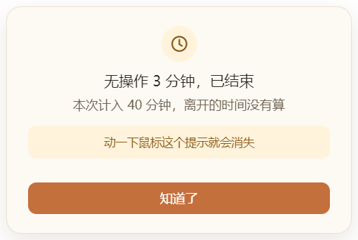

锁屏、睡眠即时结束
人不在就不算学习。系统事件一触发，计时立刻停，浮窗上标注结束原因。
网页版（kid.u32.cn/time-tracker）的短板是拿不到系统级状态——锁屏了、电脑睡了、人走了，它照样在倒计时。桌面版把这三件事补上，并坚持一条原则：宁可少记，不多记。
人不在就不算学习。系统事件一触发，计时立刻停，浮窗上标注结束原因。
2 分 30 秒先预警，动一下鼠标就无缝续上。只算到最后一次键鼠操作 + 3 分钟。
不是「连续学 40 分钟」，是任意时刻往前看 45 分钟，其中必须有 5 分钟不是在学。
任何一段学习时长，最多算到「最后一次键鼠操作 + 3 分钟」，再往后一律不计。
每 5 秒采样一次系统空闲时长。这一条同时覆盖了人走开、看视频不碰鼠标、锁屏、睡眠、断电、进程被杀——凡是没法确认你在的情况，一律不算。停电重启后按最后一次落盘结算。
只有两个状态：没在计时 / 正在计时。没有暂停，结束就是结束，要学重新点开始。
| 触发 | 判定 | 计入到 | 提示 |
|---|---|---|---|
| 目标到点响铃 | 你要的 1–40 分钟走完 | 到点那一刻 | 响铃 + 弹窗 |
| 休息不足响铃 | 最近 45 分钟内学习超过 40 分钟 | 违规那一刻 | 响铃 + 弹窗 |
| 无操作响铃 | 连续 3 分钟没有键鼠操作；2 分 30 秒时先预警 | 最后一次操作 + 3 分钟 | 150 秒预警弹窗（不响铃）；180 秒响铃 |
| 锁屏 / 睡眠静默 | 系统事件 | 事件那一刻 | 静默，浮窗标注 |
| 手动停止静默 | 点停止按钮 | 点击那一刻 | 静默 |
违规条件：最近 2700 秒内累计学习 > 2400 秒 等价于： 最近 45 分钟内休息不足 5 分钟
所以「学 39 分、歇 1 分、再学 39 分」这种绕法走不通——第二个 39 分钟还没学完就会被拦。180 / 150 / 300 / 2700 都是常量，不开放设置。阈值是规则不是偏好，能调就容易自欺。
亮色是暖纸，暗色是同一张纸的夜间版，不是纯黑。文字大小 80%–160% 可调，浮窗跟着一起缩放。



计时记录可作废或重新启用，补记记录可直接删除。作废的仍留在列表里但变灰，统计不计入。
自动结束时弹置顶提醒并响铃 10 秒，动一下鼠标它自己就消失。
这个工具最初是作者给自己小孩做学习时间统计的，统计对象是电脑上的学习时间——学英语、学编程这类会频繁敲键盘、动鼠标的活动。
敲键盘、动鼠标的电脑学习。手动点开始，离开 3 分钟自动结束，不需要人记得去停。看视频时 2 分 30 秒有预警，动一下鼠标就继续。
电脑外的学习——看纸质书、写作业。因为「无操作即停止」，这类场景得每 3 分钟晃一下鼠标续计时，显然不合适。看视频、读书从第 4 分钟起不计时，这是规则的直接后果，不是 bug。
从 Releases 下载 time-tracker-setup-x.y.z.exe 双击安装。安装包未签名，SmartScreen 首次运行会提示「已保护你的电脑」，点「更多信息 → 仍要运行」即可。免安装版在 win-unpacked 目录。